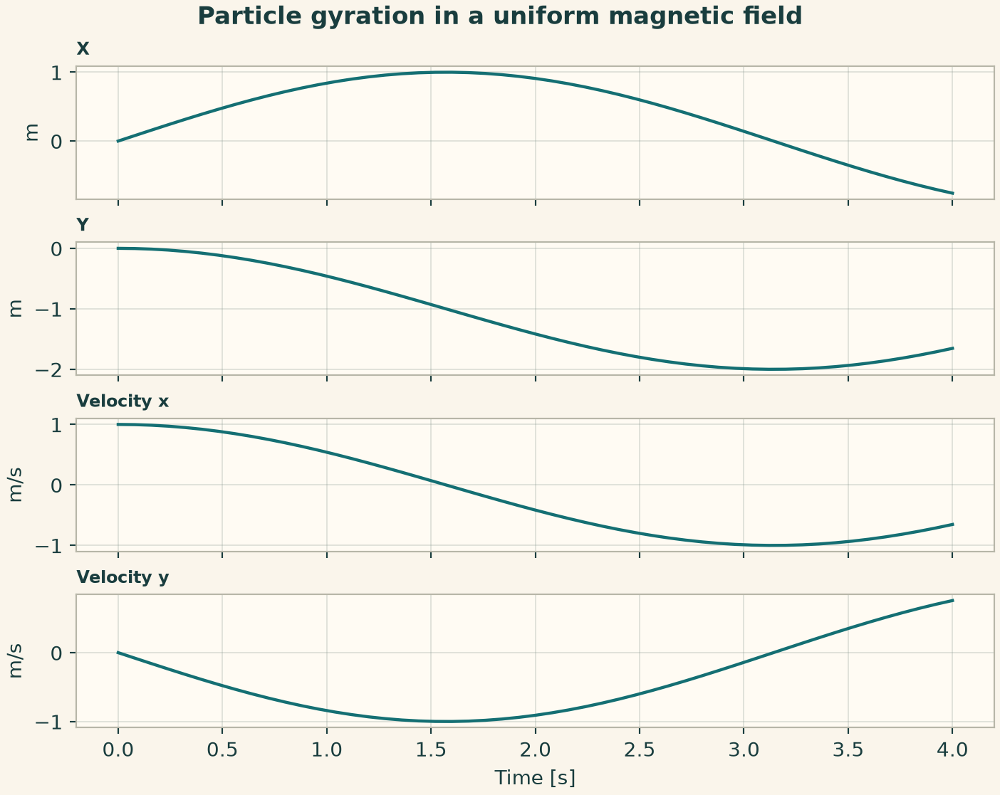
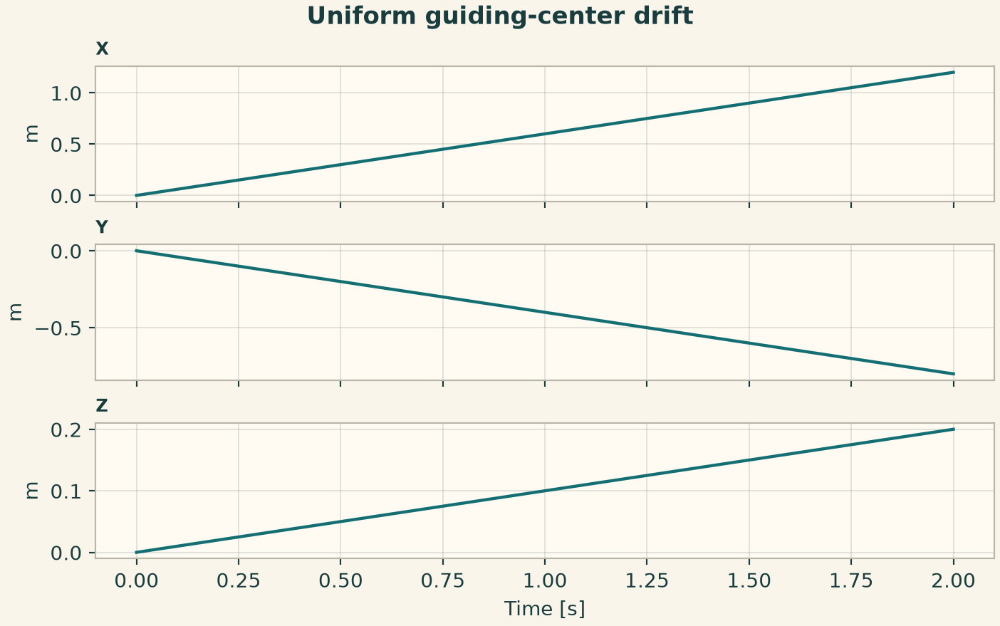
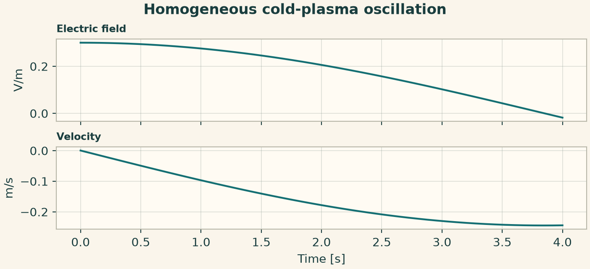
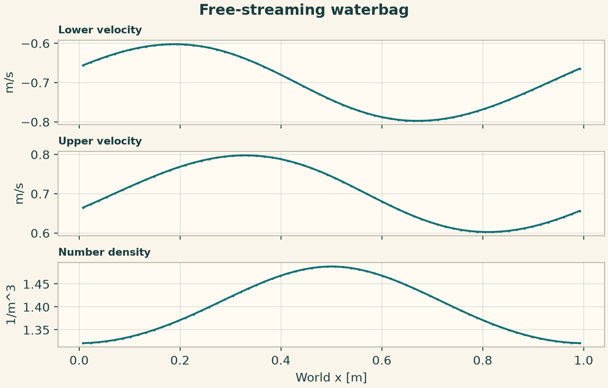
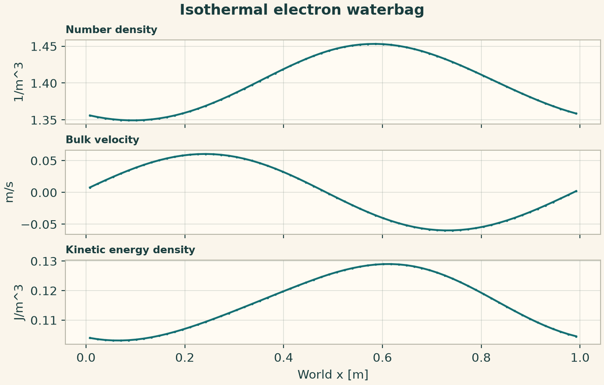
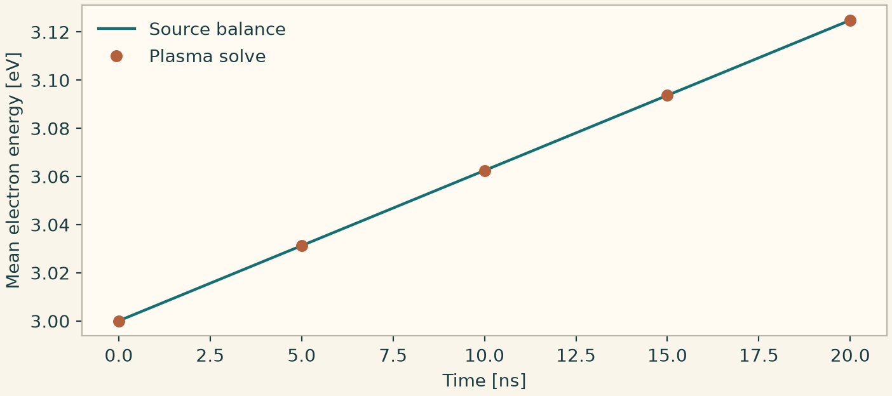
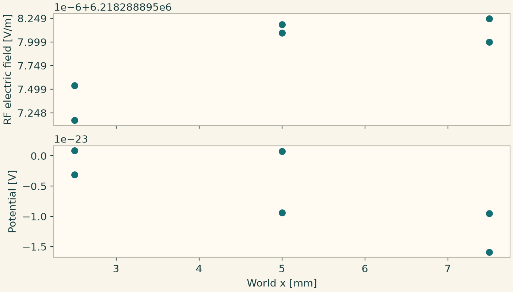
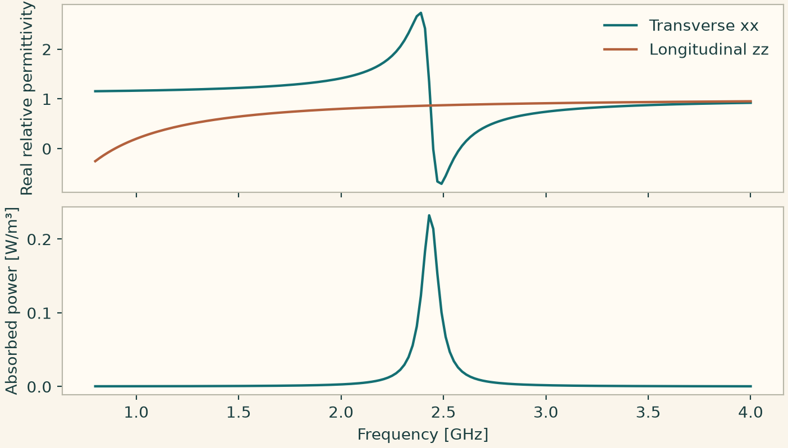
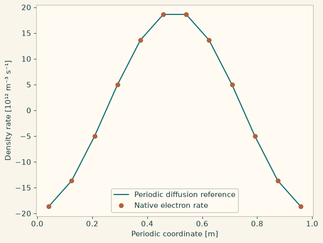
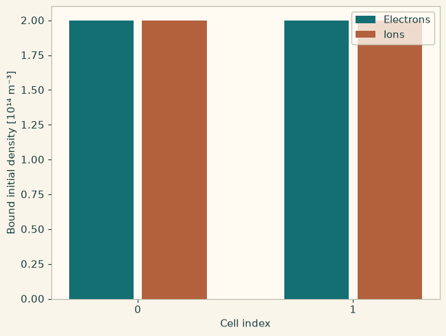

Docs › Worked physics and service recipes › Plasma physics recipes
6.17 Plasma physics recipes
6.17.1 Particle gyration in a uniform magnetic field
A magnetic field bends the orbit while preserving speed in the absence of an electric field. Use the Cartesian field components as explicit inputs.
from onesim.physics.plasma import ChargedParticle
domain = LumpedDomain()
model = ChargedParticle(
domain=domain.system,
mass=1,
charge=1,
magnetic=(0.0, 0.0, 1.0),
)
t, data = history_case(
domain,
model,
dict(x=0.0, y=0.0, z=0.0, velocity_x=1.0, velocity_y=0.0, velocity_z=0.0),
("x", "y", "velocity_x", "velocity_y"),
end=4,
dt=0.02,
)
np.testing.assert_allclose(
data["velocity_x"] ** 2 + data["velocity_y"] ** 2, 1.0, atol=1e-8
)
fig = history_plot("Particle gyration in a uniform magnetic field", model, t, data)
plt.show()

6.17.2 Uniform guiding-center drift
A constant transverse electric field and axial magnetic field produce guiding-center drift. The parallel velocity remains constant in the uniform model.
from onesim.physics.plasma import UniformGuidingCenter
domain = LumpedDomain()
model = UniformGuidingCenter(
domain=domain.system,
mass=2,
magnetic_field=0.5,
magnetic_moment=0.1,
electric_x=0.2,
electric_y=0.3,
)
t, data = history_case(
domain,
model,
dict(x=0.0, y=0.0, z=0.0, parallel_velocity=0.1),
("x", "y", "z"),
end=2,
dt=0.01,
)
np.testing.assert_allclose(data["z"], 0.1 * t, atol=1e-9)
fig = history_plot("Uniform guiding-center drift", model, t, data)
plt.show()

6.17.3 Homogeneous cold-plasma oscillation
The initial electric field and electron velocity exchange energy through the homogeneous plasma balance. The collision-free reference gives the plasma frequency.
from onesim.physics.plasma import ColdPlasmaOscillation
domain = LumpedDomain()
model = ColdPlasmaOscillation(
domain=domain.system,
density=2,
electron_mass=3,
elementary_charge=1,
permittivity=4,
collision_frequency=0,
)
t, data = history_case(
domain,
model,
dict(velocity=0.0, electric_field=0.3, thermal_energy=0.0),
("electric_field", "velocity"),
end=4,
dt=0.02,
)
np.testing.assert_allclose(
data["electric_field"], 0.3 * np.cos(np.sqrt(1 / 6) * t), atol=1e-9
)
fig = history_plot("Homogeneous cold-plasma oscillation", model, t, data)
plt.show()

6.17.4 Free-streaming velocity contours
The phase density is constant between the two evolving contour speeds. Check that their ordering is preserved and inspect number density and bulk velocity.
from onesim.physics.plasma import FreeStreamingWaterbag
line = Line(start=(0, 0, 0), end=(1, 0, 0))
model = FreeStreamingWaterbag(domain=line.line, phase_density=1.0, particle_mass=1.0)
result = line_experiment(
line,
model,
dict(
lower_velocity=lambda x: -0.7 + 0.1 * np.sin(2 * np.pi * x),
upper_velocity=lambda x: 0.7 + 0.1 * np.sin(2 * np.pi * x),
),
FiniteVolume(convection=Rusanov()),
cells=64,
end=0.1,
dt=0.001,
)
lo = result.field(model.field("lower_velocity")).values
hi = result.field(model.field("upper_velocity")).values
assert np.all(lo < hi)
np.testing.assert_allclose(
result.field(model.field("number_density")).values, hi - lo
)
fig = profile_figure(
"Free-streaming waterbag",
result,
model,
("lower_velocity", "upper_velocity", "number_density"),
)
plt.show()

6.17.5 Isothermal electron waterbag
Add an electron-temperature closure to the two contour equations. The density is still the contour width times phase density. Resolve the fastest characteristic of the coupled contour balance.
from onesim.physics.plasma import IsothermalElectronWaterbag
line = Line(start=(0, 0, 0), end=(1, 0, 0))
model = IsothermalElectronWaterbag(
domain=line.line, phase_density=1.0, particle_mass=1.0, electron_temperature=0.05
)
result = line_experiment(
line,
model,
dict(
lower_velocity=lambda x: -0.7 + 0.08 * np.sin(2 * np.pi * x),
upper_velocity=lambda x: 0.7 + 0.05 * np.sin(2 * np.pi * x),
),
FiniteVolume(convection=Rusanov()),
cells=64,
end=0.08,
dt=0.0005,
)
density = result.field(model.field("number_density"))
assert density.values.min() > 0
np.testing.assert_allclose(density.integrate().value, 1.4, atol=1e-9)
fig = profile_figure(
"Isothermal electron waterbag",
result,
model,
("number_density", "bulk_velocity", "kinetic_energy_density"),
)
plt.show()

6.17.6 Insulated plasma heating with declared transport
Specify electron and ion mobility data, neutral gas and an energy input. The closed boundary preserves electron density. Compare the mean energy to the uniform source balance and convert joules to electronvolts for plotting.
import numpy as np
import matplotlib.pyplot as plt
import onesimulation_plot_theme as theme
from onesim.cad.d3 import Cylinder
from onesim.materials import NeutralGas
from onesim.materials.properties.units.constants import (
ELECTRON_MASS,
ELEMENTARY_CHARGE,
)
from onesim.meshing import StructuredCylindricalMesher
from onesim.numerics import Numerics
from onesim.numerics.fvm import FiniteVolume, ImplicitLocalSources, ScharfetterGummel
from onesim.numerics.linear import GMRES, ILU
from onesim.numerics.nonlinear import Newton
from onesim.numerics.time import BackwardEuler
from onesim.physics.chemistry import (
Chemistry,
ChemistryEvaluation,
ReactionNetworkIR,
SpeciesIR,
)
from onesim.physics.plasma import (
DriftDiffusionPlasma,
ElectronCollisionModel,
IonMobilityModel,
Maxwellian,
MagnetizedElectronTransport,
MeanElectronEnergyEquation,
NoParticleFlux,
)
from onesim.simulation import Problem, Simulation
from onesim.simulation.initial_conditions import InitialValue
class EmptyKinetics:
state_independent = True
def evaluate(self, **context):
return ChemistryEvaluation(reaction_rates={})
cylinder = Cylinder(radius=0.01, length=0.02)
network = ReactionNetworkIR(
"closed argon balance",
"1",
(
SpeciesIR("electron", -1, ELECTRON_MASS, role="electron"),
SpeciesIR(
"Ar+",
1,
6.63e-26,
transport={"mobility": {"value": 0.2, "unit": "m^2/V/s"}},
),
SpeciesIR("Ar", 0, 6.63e-26),
),
(),
metadata={
"electron_momentum_transfer": {
"kind": "constant_frequency",
"value": 1e9,
"unit": "1/s",
}
},
)
chemistry = Chemistry(network=network, kinetics=EmptyKinetics())
gas = NeutralGas(species="Ar", pressure=0.5, temperature=300.0)
collisions = ElectronCollisionModel(
gas=gas, chemistry=chemistry, energy_distribution=Maxwellian()
)
model = DriftDiffusionPlasma(
domain=cylinder.volume,
gas=gas,
chemistry=chemistry,
electron_energy=MeanElectronEnergyEquation(),
electron_transport=MagnetizedElectronTransport(collisions=collisions),
ion_transport=IonMobilityModel(gas=gas, chemistry=chemistry),
prescribed_inputs={"electron_heating": 100.0},
)
mesh = StructuredCylindricalMesher(
radial_cells=1, azimuthal_cells=4, axial_cells=1
).generate(cylinder)
problem = Problem(
name="Closed plasma energy balance",
geometry=cylinder,
physics=(model,),
boundary_conditions=(
NoParticleFlux(boundary=cylinder.boundaries.all, physics=model),
),
initial_conditions=(
InitialValue(model.electron_density, 1e14),
InitialValue(model.density("Ar+"), 1e14),
InitialValue(model.mean_electron_energy, 3.0, unit="eV"),
),
)
sim = Simulation(
problem=problem,
mesh=mesh,
numerics=Numerics(
spatial=FiniteVolume(
particle_flux=ScharfetterGummel(),
energy_flux=ScharfetterGummel(),
reaction_sources=ImplicitLocalSources(),
),
nonlinear_solver=Newton(
linear_solver=GMRES(
preconditioner=ILU(), relative_tolerance=1e-11, absolute_tolerance=0.0
)
),
time_integrator=BackwardEuler(),
),
)
sim.validate().require_valid()
result = sim.run(start_time=0, end_time=2e-8, time_step=5e-9)
times = np.asarray(result.times)
energy = result.field(model.mean_electron_energy)
values = np.array([energy.evaluate(mesh.cell_centers, time=t).mean() for t in times])
exact = 3 + 100 * times / (1e14 * ELEMENTARY_CHARGE)
np.testing.assert_allclose(values / ELEMENTARY_CHARGE, exact, rtol=2e-10)
theme.use_theme()
fig, ax = plt.subplots(figsize=(7.2, 3.2), layout="constrained")
ax.plot(1e9 * times, exact, label="Source balance")
ax.plot(1e9 * times, values / ELEMENTARY_CHARGE, "o", label="Plasma solve")
ax.set(xlabel="Time [ns]", ylabel="Mean electron energy [eV]")
ax.legend(frameon=False)
plt.show()

6.17.7 Native ECR with complex Maxwell and conserved plasma state
The example uses the source checkout's hydrogen chemistry and an explicit reflecting wall with grounded potential. The short run checks native coupling and field reconstruction. The catalogue rates and idealized box define a numerical example rather than an ECR device calibration.
import numpy as np
import matplotlib.pyplot as plt
import onesimulation_plot_theme as theme
from onesim.cad.d3 import Box
from onesim.meshing import StructuredTetrahedralMesher
from onesim.numerics import Numerics
from onesim.numerics.fem import FiniteElement, Nedelec
from onesim.numerics.fvm import FiniteVolume
from onesim.numerics.linear import SparseDirect
from onesim.numerics.nonlinear import Newton
from onesim.numerics.time import BackwardEuler
from onesim.physics.plasma import (
EcrExcitation,
NativeEcrDiscretization,
NativeEcrPlasma,
)
from onesim.physics.plasma.data.chemistry_library import load_chemistry
from onesim.physics.plasma.fluid.models.declarations.conditions import (
PotentialBoundaryCondition,
SpeciesBoundaryCondition,
)
from onesim.physics.plasma.fluid.models.declarations.species.multispecies import (
MultispeciesTransportModel,
)
from onesim.physics.plasma.walls.binding.boundary_binding import PlasmaBoundaryBinding
from onesim.simulation import Problem, Simulation
from onesim.simulation.initial_conditions import InitialValue
box = Box(length=0.01, width=0.01, height=0.01)
names = ("e", "H2", "H2+")
chemistry = load_chemistry("hydrogen", species=names)
wall = PlasmaBoundaryBinding(
"wall",
marker_id="wall",
conditions=tuple(
SpeciesBoundaryCondition(
"reflect:" + n,
"wall",
n,
"density",
"reflecting",
value={"gas_temperature": 350.0},
)
for n in names
),
potential=PotentialBoundaryCondition("ground", "ground"),
)
model = NativeEcrPlasma(
domain=box.volume,
chemistry=chemistry,
transport_model=MultispeciesTransportModel(neutral_diffusivity=(("H2", 0.01),)),
excitation=EcrExcitation(
frequency=2.45e9, power=1e-4, impressed_current_density=(1.0, 0.2, 0.3)
),
walls=((box.boundaries.all, wall),),
plasma_parameters={"magnetic_flux_density": (0, 0, 0.05)},
)
initial = tuple(
InitialValue(model.density(n), v) for n, v in zip(names, (1e14, 1e20, 1e14))
)
mesh = StructuredTetrahedralMesher(cells=(1, 1, 1)).generate(box)
sim = Simulation(
problem=Problem(
name="Native ECR",
geometry=box,
physics=(model,),
initial_conditions=initial
+ (InitialValue(model.electron_energy_density, 4.5e14),),
),
mesh=mesh,
numerics=Numerics(
spatial=FiniteVolume(
provider=NativeEcrDiscretization(
maxwell=FiniteElement(element=Nedelec(order=2))
)
),
time_integrator=BackwardEuler(),
nonlinear_solver=Newton(),
linear_solver=SparseDirect(),
),
)
sim.validate().require_valid()
result = sim.run(start_time=0, end_time=2e-12, time_step=1e-12)
assert len(result.native_states) == 3
x = np.asarray(mesh.coordinates)[np.asarray(mesh.cells)].mean(axis=1)[:, 0]
electric = np.asarray(result.field(model.electric_field).values)
field = np.asarray(result.field(model.potential).values).ravel()
assert electric.shape == (x.size, 3) and field.shape == x.shape
assert np.isfinite(electric).all() and np.isfinite(field).all()
theme.use_theme()
fig, (a, b) = plt.subplots(
2, 1, sharex=True, figsize=(7.2, 4.1), layout="constrained"
)
a.scatter(1e3 * x, np.linalg.norm(electric, axis=-1))
a.set_ylabel("RF electric field [V/m]")
b.scatter(1e3 * x, field)
b.set(xlabel="World x [mm]", ylabel="Potential [V]")
plt.show()

6.17.8 Frequency sweep of the cold-plasma tensor
A collision collaborator supplies a frequency from the electron energy. Sweep the microwave frequency at fixed magnetic field and compare transverse and longitudinal permittivity. Absorbed power uses the same constitutive response and the selected peak phasor convention.
import numpy as np
import matplotlib.pyplot as plt
import onesimulation_plot_theme as theme
from onesim.materials.properties.units.constants import (
ELEMENTARY_CHARGE,
VACUUM_PERMITTIVITY,
)
from onesim.physics.plasma import MagnetizedColdPlasma
class ConstantCollisions:
def collision_frequency(self, *, mean_electron_energy, points, time):
return 3e8
plasma = MagnetizedColdPlasma(collision_model=ConstantCollisions())
frequencies = np.linspace(0.8e9, 4.0e9, 160)
response = [
plasma.evaluate(
electron_density=np.array([1e16]),
mean_electron_energy=np.array([3 * ELEMENTARY_CHARGE]),
magnetic_field=np.array([[0.0, 0.0, 0.087]]),
frequency=f,
phasor_convention="exp(-i*omega*t)",
amplitude_convention="peak",
)
for f in frequencies
]
relative = np.array([r.permittivity[0] / VACUUM_PERMITTIVITY for r in response])
power = np.array(
[r.absorbed_power_density(np.array([[1.0, 0.0, 0.0]]))[0] for r in response]
)
assert np.isfinite(relative).all() and power.min() >= 0
theme.use_theme()
fig, (a, b) = plt.subplots(
2, 1, sharex=True, figsize=(7.2, 4.1), layout="constrained"
)
a.plot(frequencies / 1e9, relative[:, 0, 0].real, label="Transverse xx")
a.plot(frequencies / 1e9, relative[:, 2, 2].real, label="Longitudinal zz")
a.set_ylabel("Real relative permittivity")
a.legend(frameon=False)
b.plot(frequencies / 1e9, power)
b.set(xlabel="Frequency [GHz]", ylabel="Absorbed power [W/m³]")
plt.show()

6.17.9 Prepare periodic plasma transport with an explicit Poisson gauge
Construct the wall-free periodic face topology and wrap its real cell operator with a global mean-potential constraint. The manufactured electron and ion populations start locally neutral and diffuse with equal coefficients. Verify the Gauss residual, the periodic diffusion rate and conservation of particle number.
import numpy as np
import matplotlib.pyplot as plt
import onesimulation_plot_theme as theme
theme.use_theme()
from onesim.materials.properties.units.constants import ELEMENTARY_CHARGE
from onesim.numerics.discretization.equations.contracts.operators.operator_contracts import SpatialExecutionContext
from onesim.numerics.fvm.contracts.coupled_cell_transport import CellCoefficients, CoupledNumericalConfiguration
from onesim.numerics.fvm.spatial.transport.coupled_cell_transport import CoupledCellTransportService
from onesim.physics.plasma import operators as plasma_ops
from onesim.simulation.state.history.state_snapshot import StateSnapshot
shape = (12, 3, 3)
extents = (1.0, 1.0, 1.0)
count = int(np.prod(shape))
dx = extents[0] / shape[0]
x_cells = (np.arange(shape[0]) + 0.5)*dx
density = np.broadcast_to((1e14*(1+0.1*np.cos(2*np.pi*x_cells)))[:, None, None], shape)
diffusivity = 0.05 # m²/s
epsilon = 8.8541878128e-12
def coefficients(state, time):
return CellCoefficients(
mobility=np.zeros_like(state),
diffusivity=np.full_like(state, diffusivity),
charge_number=(-1.0, 1.0, 0.0),
)
def volume_rates(state, time):
rates = np.zeros_like(state)
rates[:, 2] = ELEMENTARY_CHARGE * (state[:, 1] - state[:, 0])
return rates
request = plasma_ops.periodic_cell_transport_request(
shape, extents, initial_fields=(density, density, np.zeros(shape)), potential_field_index=2,
permittivity=epsilon, coefficients=coefficients, volume_rates=volume_rates,
)
assert not request.boundary_faces and len(request.internal_faces) == 3*count
field_ids = ("electron_density", "ion_density", "potential")
provider = CoupledCellTransportService().operator(
request, CoupledNumericalConfiguration(),
field_ids=field_ids, field_units=("1/m^3", "1/m^3", "V"),
)
gauss = plasma_ops.periodic_cell_poisson_dae_constraint(
shape, extents, permittivity=epsilon,
charge_fields={"electron_density": -ELEMENTARY_CHARGE, "ion_density": ELEMENTARY_CHARGE},
)
adapter = plasma_ops.periodic_cell_transport_dae(provider, gauss)
values = dict(zip(field_ids, request.initial_fields, strict=True))
values[gauss.gauge_field] = 0.0
snapshot = StateSnapshot("periodic-plasma", 0.0, values)
context = SpatialExecutionContext(gauss.to_carrier().carrier_id, snapshot.state_type, 0.0)
balance = adapter.residual(snapshot, context).values
rates = np.asarray(balance.differential_rate(snapshot, 0.0)).reshape(2, *shape)
np.testing.assert_allclose(balance.algebraic_residual(snapshot, 0.0), 0.0, atol=1e-20)
np.testing.assert_allclose(rates[0], rates[1], atol=1e-2, rtol=1e-12)
expected = diffusivity * (np.roll(density, 1, axis=0) - 2*density + np.roll(density, -1, axis=0)) / dx**2
np.testing.assert_allclose(rates[0], expected, atol=5.0, rtol=1e-12)
np.testing.assert_allclose(np.sum(rates[0]) / np.sum(np.abs(rates[0])), 0.0, atol=1e-13)
print("Differential fields", balance.differential_field_ids)
print("Algebraic fields", balance.algebraic_field_ids)
fig, ax = plt.subplots(layout="constrained")
ax.plot(x_cells, expected[:, 0, 0] / 1e12, "-", label="Periodic diffusion reference")
ax.plot(x_cells, rates[0, :, 0, 0] / 1e12, "o", label="Native electron rate")
ax.set(xlabel="Periodic coordinate [m]", ylabel="Density rate [10¹² m⁻³ s⁻¹]")
ax.legend()
plt.show()

6.17.10 Bind a native plasma operator and translate its initial conditions
Build a bounded hydrogen plasma provider, then use the condition binder to replace the initial densities with explicit semantic declarations. Evaluate the differential rates and the grounded Poisson constraint through the cell DAE adapter. The local hydrogen catalogue includes estimated coefficients. This case checks the operator handoff and state ownership.
import numpy as np
import matplotlib.pyplot as plt
import onesimulation_plot_theme as theme
theme.use_theme()
from types import SimpleNamespace
from onesim.numerics.discretization.equations.contracts.equations.problem_ir import InitialConditionIR
from onesim.numerics.discretization.equations.contracts.operators.operator_contracts import SpatialExecutionContext
from onesim.numerics.discretization.geometry.carriers.kernels.simplex.tetrahedral import (
tetrahedral_dual_faces, tetrahedral_geometry,
)
from onesim.numerics.fvm.contracts.coupled_cell_transport import BoundaryFace
from onesim.physics.plasma import operators as plasma_ops
from onesim.physics.plasma.data.chemistry_library import load_chemistry
from onesim.physics.plasma.fluid.models.declarations.conditions import (
PotentialBoundaryCondition, SpeciesBoundaryCondition,
)
from onesim.physics.plasma.fluid.models.declarations.species.multispecies import (
MultispeciesDriftDiffusionProblem, MultispeciesTransportModel,
)
from onesim.physics.plasma.fluid.numerics.backends.transport.multispecies_drift_diffusion import (
MultispeciesDriftDiffusionProvider,
)
from onesim.physics.plasma.walls.binding.boundary_binding import PlasmaBoundaryBinding
from onesim.simulation.state.history.state_snapshot import StateSnapshot
points = 0.01 * np.array([[0, 0, 0], [1, 0, 0], [0, 1, 0], [0, 0, 1], [0, 0, -1]], dtype=float)
cells = np.array([[0, 1, 2, 3], [0, 2, 1, 4]])
exterior = tetrahedral_dual_faces(tetrahedral_geometry(points, cells))[1]
faces = tuple(
BoundaryFace(face.owner_cell, face.area, tuple(face.normal), tuple(face.centroid),
face.centre_distance, "wall", "")
for face in exterior
)
species = ("e", "H2", "H2+")
wall = PlasmaBoundaryBinding(
"wall", marker_id="wall",
conditions=tuple(
SpeciesBoundaryCondition(
"reflect:"+name, "wall", name, "density", "reflecting",
value={"gas_temperature": 350.0},
)
for name in species
),
potential=PotentialBoundaryCondition("ground", "ground"),
)
provider = MultispeciesDriftDiffusionProvider(
chemistry=load_chemistry("hydrogen", species=species), boundaries=(wall,),
transport_model=MultispeciesTransportModel(neutral_diffusivity=(("H2", 0.01),)),
require_full_boundary_coverage=False,
)
problem = MultispeciesDriftDiffusionProblem(
points, cells, faces, tuple(zip(species, (1e14, 1e20, 1e14), strict=True)),
3.0, magnetic_flux_density=(0, 0, 0.05),
)
native = plasma_ops.plasma_operator(provider, problem, final_time=1e-11)
binding = plasma_ops.plasma_condition_binding(provider, problem, final_time=1e-11)
conditions = tuple(
InitialConditionIR(
"seed-"+name, name, ("discharge",), value, "1/m^3", value_kind="constant",
)
for name, value in (("e", "2e14"), ("H2", "1e20"), ("H2+", "2e14"))
)
bound = binding.bind(
spatial_operator=native, problem=SimpleNamespace(initial_conditions=conditions),
initial_state=None,
)
assert bound.applied_initial_ids == tuple(condition.initial_id for condition in conditions)
adapter = plasma_ops.cell_transport_dae(bound.spatial_operator)
fields = dict(zip(adapter.state_field_ids, np.asarray(bound.initial_state).T, strict=True))
snapshot = StateSnapshot("bounded-plasma", 0.0, fields)
context = SpatialExecutionContext("discharge", snapshot.state_type, 0.0)
balance = adapter.residual(snapshot, context).values
np.testing.assert_allclose(snapshot.field("e"), 2e14)
np.testing.assert_allclose(snapshot.field("H2+"), 2e14)
np.testing.assert_allclose(balance.algebraic_residual(snapshot, 0.0), 0.0, atol=1e-20)
assert np.isfinite(balance.differential_rate(snapshot, 0.0)).all()
print("Applied initial IDs", bound.applied_initial_ids)
print("Differential fields", balance.differential_field_ids)
print("Algebraic fields", balance.algebraic_field_ids)
fig, ax = plt.subplots(layout="constrained")
cell_index = np.arange(len(cells))
ax.bar(cell_index - 0.17, fields["e"]/1e14, width=0.3, label="Electrons")
ax.bar(cell_index + 0.17, fields["H2+"]/1e14, width=0.3, label="Ions")
ax.set(xlabel="Cell index", xticks=cell_index, ylabel="Bound initial density [10¹⁴ m⁻³]")
ax.legend()
plt.show()
